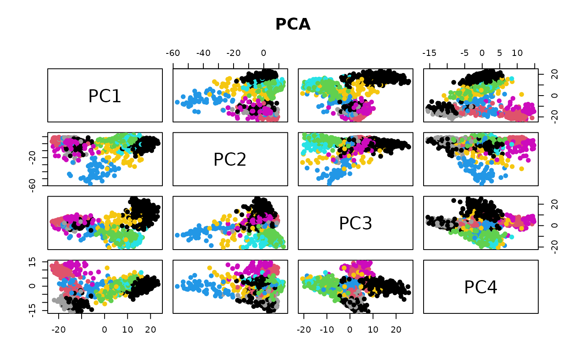
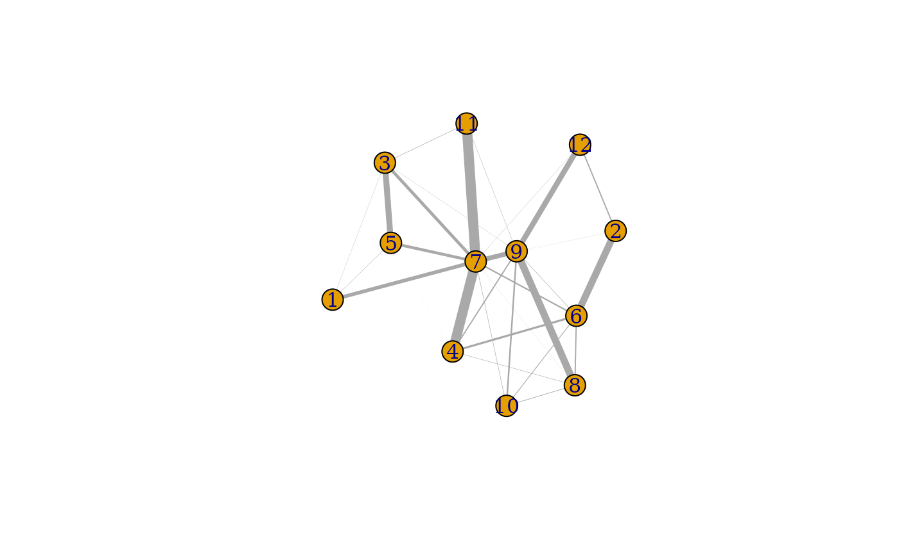

Clustering single cell RNA-seq
This code is taken verbatim from the bluster “diagnostics” vignette.
Acquire Grun et al’s single cell RNA-seq dataset
[Grun 2016] (https://www.sciencedirect.com/science/article/pii/S1934590916300947) define an algorithm, StemID, that infers candidate multipotent cell populations in the human pancreas.
library(scRNAseq)## Loading required package: SingleCellExperiment## Loading required package: SummarizedExperiment## Loading required package: MatrixGenerics## Loading required package: matrixStats##
## Attaching package: 'MatrixGenerics'## The following objects are masked from 'package:matrixStats':
##
## colAlls, colAnyNAs, colAnys, colAvgsPerRowSet, colCollapse,
## colCounts, colCummaxs, colCummins, colCumprods, colCumsums,
## colDiffs, colIQRDiffs, colIQRs, colLogSumExps, colMadDiffs,
## colMads, colMaxs, colMeans2, colMedians, colMins, colOrderStats,
## colProds, colQuantiles, colRanges, colRanks, colSdDiffs, colSds,
## colSums2, colTabulates, colVarDiffs, colVars, colWeightedMads,
## colWeightedMeans, colWeightedMedians, colWeightedSds,
## colWeightedVars, rowAlls, rowAnyNAs, rowAnys, rowAvgsPerColSet,
## rowCollapse, rowCounts, rowCummaxs, rowCummins, rowCumprods,
## rowCumsums, rowDiffs, rowIQRDiffs, rowIQRs, rowLogSumExps,
## rowMadDiffs, rowMads, rowMaxs, rowMeans2, rowMedians, rowMins,
## rowOrderStats, rowProds, rowQuantiles, rowRanges, rowRanks,
## rowSdDiffs, rowSds, rowSums2, rowTabulates, rowVarDiffs, rowVars,
## rowWeightedMads, rowWeightedMeans, rowWeightedMedians,
## rowWeightedSds, rowWeightedVars## Loading required package: GenomicRanges## Loading required package: stats4## Loading required package: BiocGenerics##
## Attaching package: 'BiocGenerics'## The following objects are masked from 'package:stats':
##
## IQR, mad, sd, var, xtabs## The following objects are masked from 'package:base':
##
## anyDuplicated, append, as.data.frame, basename, cbind, colnames,
## dirname, do.call, duplicated, eval, evalq, Filter, Find, get, grep,
## grepl, intersect, is.unsorted, lapply, Map, mapply, match, mget,
## order, paste, pmax, pmax.int, pmin, pmin.int, Position, rank,
## rbind, Reduce, rownames, sapply, setdiff, sort, table, tapply,
## union, unique, unsplit, which.max, which.min## Loading required package: S4Vectors##
## Attaching package: 'S4Vectors'## The following objects are masked from 'package:base':
##
## expand.grid, I, unname## Loading required package: IRanges## Loading required package: GenomeInfoDb## Loading required package: Biobase## Welcome to Bioconductor
##
## Vignettes contain introductory material; view with
## 'browseVignettes()'. To cite Bioconductor, see
## 'citation("Biobase")', and for packages 'citation("pkgname")'.##
## Attaching package: 'Biobase'## The following object is masked from 'package:MatrixGenerics':
##
## rowMedians## The following objects are masked from 'package:matrixStats':
##
## anyMissing, rowMedians
sce <- GrunPancreasData()## snapshotDate(): 2022-04-26## see ?scRNAseq and browseVignettes('scRNAseq') for documentation## loading from cache## snapshotDate(): 2022-04-26## see ?scRNAseq and browseVignettes('scRNAseq') for documentation## loading from cache
# Quality control to remove bad cells.
library(scuttle)
qcstats <- perCellQCMetrics(sce)
qcfilter <- quickPerCellQC(qcstats, sub.fields="altexps_ERCC_percent")## Warning in .get_med_and_mad(metric, batch = batch, subset = subset,
## share.medians = share.medians, : missing values ignored during outlier detection
sce <- sce[,!qcfilter$discard]
# Normalization by library size.
sce <- logNormCounts(sce)
# Feature selection.
library(scran)
dec <- modelGeneVar(sce)
hvgs <- getTopHVGs(dec, n=1000)
# Dimensionality reduction.
set.seed(1000)
library(scater)## Loading required package: ggplot2Clustering using a nearest-neighbor graph; visualization via TSNE and PCA
From bluster’s makeSNNGraph help page
The 'makeSNNGraph' function builds a shared nearest-neighbour
graph using observations as nodes. For each observation, its 'k'
nearest neighbours are identified using the 'findKNN' function,
based on distances between their expression profiles (Euclidean by
default). An edge is drawn between all pairs of observations that
share at least one neighbour, weighted by the characteristics of
the shared nearest neighbors - see "Weighting Schemes" below.
The aim is to use the SNN graph to perform clustering of
observations via community detection algorithms in the 'igraph'
package. This is faster and more memory efficient than
hierarchical clustering for large numbers of observations. In
particular, it avoids the need to construct a distance matrix for
all pairs of observations. Only the identities of nearest
neighbours are required, which can be obtained quickly with
methods in the 'BiocNeighbors' package.
library(bluster)
mat <- reducedDim(sce)
clust.info <- clusterRows(mat, NNGraphParam(), full=TRUE)
clusters <- clust.info$clusters
table(clusters)## clusters
## 1 2 3 4 5 6 7 8 9 10 11 12
## 285 171 161 59 174 49 70 137 69 65 28 23
plot(reducedDims(sce)$TSNE, col=clusters, pch=19, main="TSNE")
plot(reducedDims(sce)$PCA, col=clusters, pch=19, main="PCA")
pairs(reducedDims(sce)$PCA[,1:4], col=clusters, pch=19, main="PCA")
Assessment via pairwiseModularity
g <- clust.info$objects$graph
ratio <- pairwiseModularity(g, clusters, as.ratio=TRUE)
cluster.gr <- igraph::graph_from_adjacency_matrix(log2(ratio+1),
mode="upper", weighted=TRUE, diag=FALSE)
# Increasing the weight to increase the visibility of the lines.
set.seed(1100101)
plot(cluster.gr, edge.width=igraph::E(cluster.gr)$weight*5,
layout=igraph::layout_with_lgl)